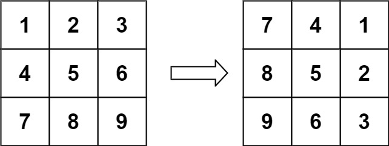
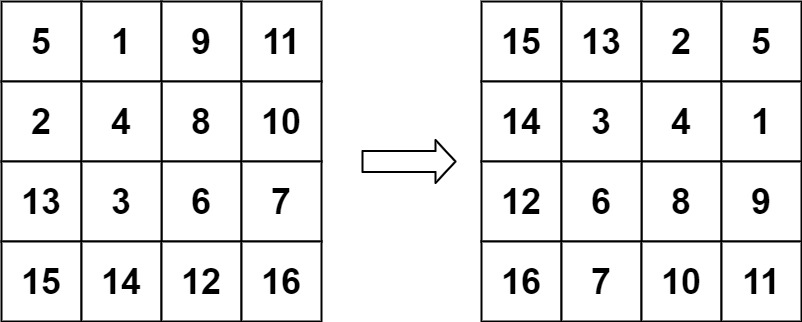

题面
给定一个 n × n 的二维矩阵 matrix 表示一个图像。请你将图像顺时针旋转 90 度。
你必须在原地 旋转图像，这意味着你需要直接修改输入的二维矩阵。请不要 使用另一个矩阵来旋转图像。
示例 1：

输入： matrix = [[1,2,3],[4,5,6],[7,8,9]]
输出：[[7,4,1],[8,5,2],[9,6,3]]示例 2：

输入： matrix = [[5,1,9,11],[2,4,8,10],[13,3,6,7],[15,14,12,16]]
输出：[[15,13,2,5],[14,3,4,1],[12,6,8,9],[16,7,10,11]]提示：
n == matrix.length == matrix[i].length1 <= n <= 20-1000 <= matrix[i][j] <= 1000
解法一 辅助矩阵
思路
- 顺时针旋转 90° 的坐标变换规则：
matrix[i][j]→matrix[j][n-1-i] - 即原来第
i行第j列的元素，旋转后到第j行第n-1-i列 - 用
deepcopy复制一份原矩阵，按变换规则把值写到副本，最后用matrix[:] = tmp写回原矩阵 - 易错点：
- 题目要求原地修改，不能 `return tmp`：判题系统检查的是传入的
matrix对象，不看返回值。如果只修改tmp而不写回matrix，输出还是原数组 - 写回必须用 `matrix[:] = tmp`，不能用 `matrix = tmp`：
matrix[:] = tmp是原地替换列表内容（修改同一个对象），而matrix = tmp只是让局部变量指向新对象，函数外部看不到变化
代码实现
class Solution:
def rotate(self, matrix: List[List[int]]) -> None:
n = len(matrix)
tmp = copy.deepcopy(matrix)
for i in range(n):
for j in range(n):
tmp[j][n - 1 - i] = matrix[i][j]
matrix[:] = tmp- 复杂度：时间 O(n²)，空间 O(n²)（deepcopy 副本）
解法二 原地四点旋转
思路
- 每次同时旋转 4 个位置的元素，只用一个
tmp变量，空间 O(1) - 推导过程（用笔写一遍）：
- 牢记核心规则：列变成行，即
(i,j)旋转后去(j, n-1-i) - 从
(i,j)出发，连续应用 4 次变换，形成一个环：
(i, j)→(j, n-1-i)→(n-1-i, n-1-j)→(n-1-j, i)→ 回到(i, j)
- 赋值链（逻辑上谁覆盖谁）：
matrix[i][j]←matrix[n-1-j][i]←matrix[n-1-i][n-1-j]←matrix[j][n-1-i]←tmp - 代码里把这个链倒着写：先暂存
tmp = matrix[i][j]，然后从左往右依次赋值
- 遍历范围：只需遍历矩阵的 1/4 区域作为起点
i ∈ range(n // 2)：取上半部分的行j ∈ range((n+1) // 2)：取左半部分的列（奇数 n 时多取中间列）- 偶数 n：
n//2 × n//2= 恰好 1/4 - 奇数 n：
n//2 × (n+1)//2，覆盖中间行/列的格子（中心点不动，无需处理） - 易错点：
- 赋值顺序很绕，容易写错方向：建议先在纸上写出 4 个坐标的环，确定"谁被谁覆盖"，再倒着写代码
- 遍历范围两个维度不同：
n//2和(n+1)//2，不能都写n//2，否则奇数 n 时漏掉中间列的元素
代码实现
class Solution:
def rotate(self, matrix: List[List[int]]) -> None:
n = len(matrix)
for i in range(n // 2):
for j in range((n + 1) // 2):
tmp = matrix[i][j]
matrix[i][j] = matrix[n - 1 - j][i]
matrix[n - 1 - j][i] = matrix[n - 1 - i][n - 1 - j]
matrix[n - 1 - i][n - 1 - j] = matrix[j][n - 1 - i]
matrix[j][n - 1 - i] = tmp- 复杂度：时间 O(n²)，空间 O(1)（只用了一个临时变量）